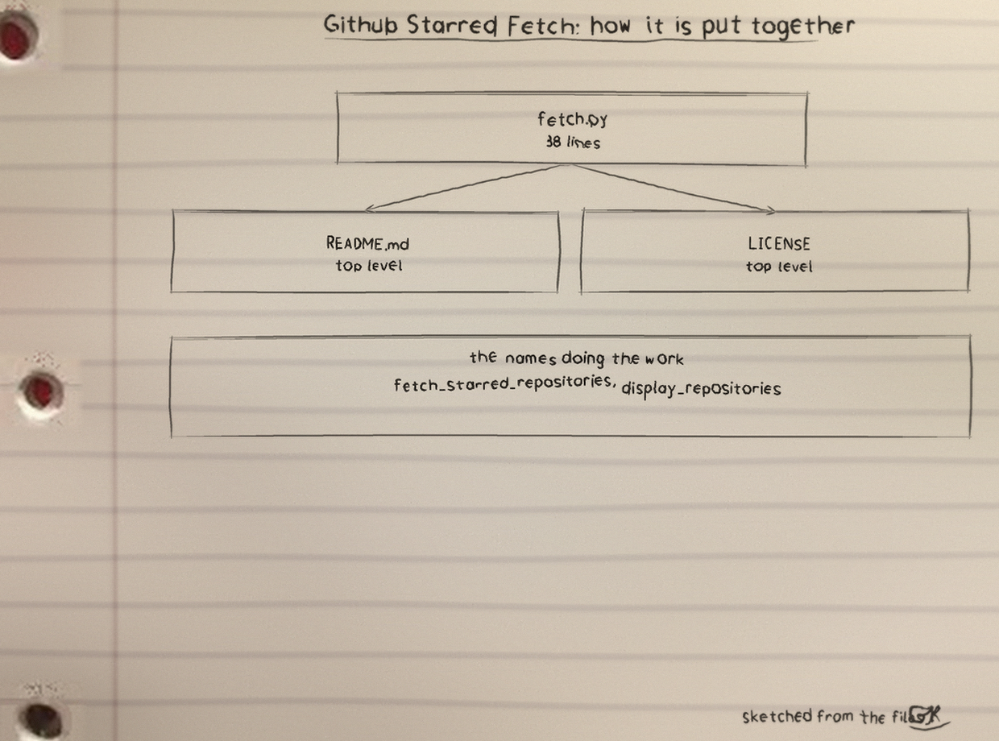
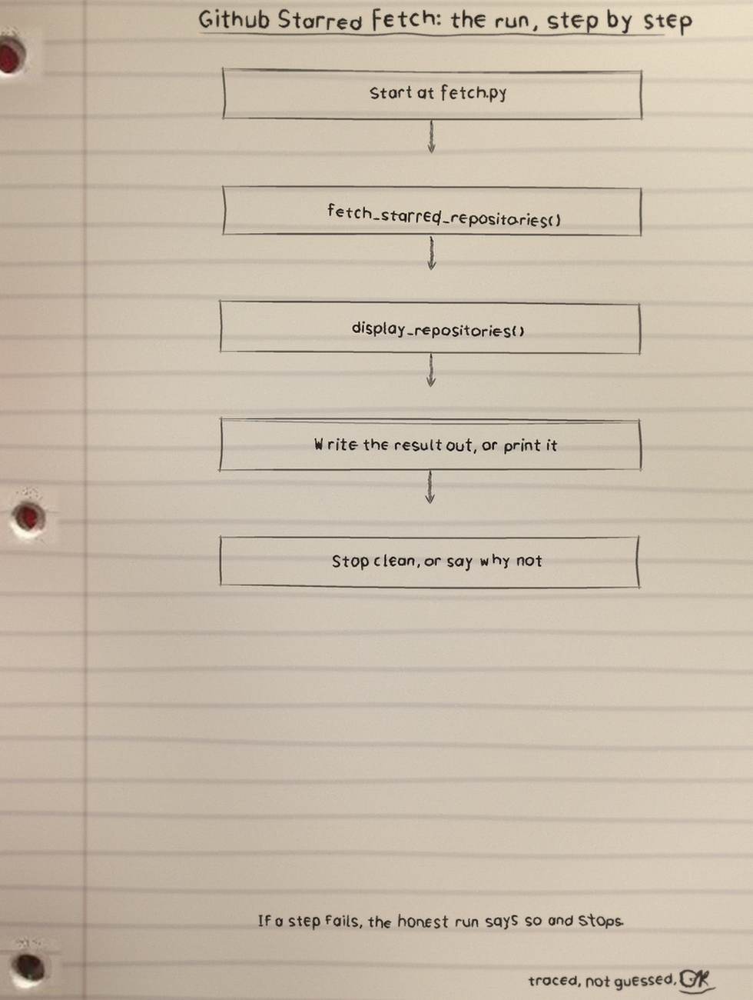
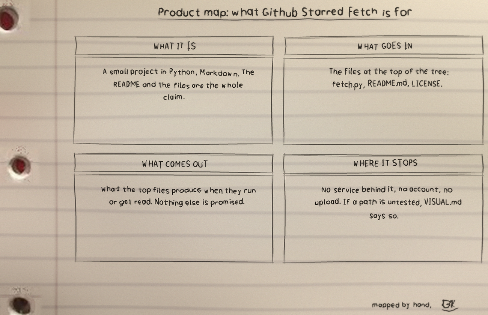

First hob: Run it
pip install requests
python3 fetch.py <github-username>
python3 fetch.py octocat
python3 fetch.py --helpPython 3 plus the requests package.
Second hob: What comes back
Repository: example-repo
Description: An example
Stars: 42
----------------------------------------One block per repository: Repository:, Description:, Stars:, blocks divided by a line of dashes. The fallback words are No description when a repository has none, and No repositories found. with exit 0 when a user has starred nothing, because an empty list is an answer, not a failure.
Third hob: How the fetching works
Requests go to https://api.github.com/users/<username>/starred with per_page=100, page follows page until a short page returns, so a user with hundreds of stars is listed whole rather than cut off at the first hundred. Every request times out at 15 seconds. In code: fetch_starred_repositories(username, token='') returns the list and display_repositories(repositories) prints it.
Fourth hob: Refusals and the token
No username prints usage and exits 2. A username that cannot be a GitHub username, one containing a slash for instance, is rejected with exit 2 before any request leaves the machine. A failed request prints its reason to stderr and exits 1. No token is needed for public data, and GITHUB_TOKEN, when set, travels in the Authorization: Bearer header to raise the rate limit and is never printed.
Mocked tests in test_fetch.py, run with python3 -m unittest, cover pagination, the timeout, headers, bad bodies, and exit codes without a live call. Files: fetch.py, test_fetch.py, assets/logo.png, assets/banner.png, LICENSE under GPL-3.0.
The sheets
The full set is the Github-Starred-Fetch-Visuals folder in the repo.


